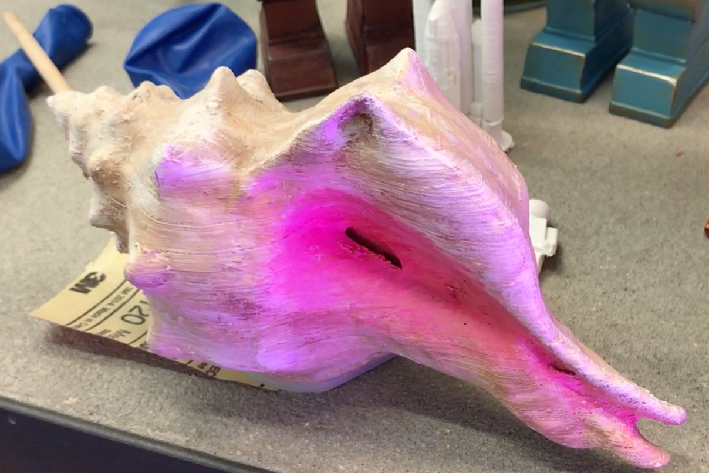

"Shell Poems" was a project to put poems inside of sea shells on Miami Beach. 3-D printed shells with Bluetooth speakers hidden inside them were placed on Miami Beach for people to discover. When they put the shell up to their ear, one of several Ocean Vuong poems played, read by the poet himself.
O, Miami Poetry Festival 2018
Project by Ricardo Chuecos and Cristian Duran
Shell created by Mario The Maker Cruz and Moonlighter Maker Space
Videography by Jorge Graupera
Editing by Scott Cunningham
Song: "Yellow Moon" by Preservation Hall Jazz Band